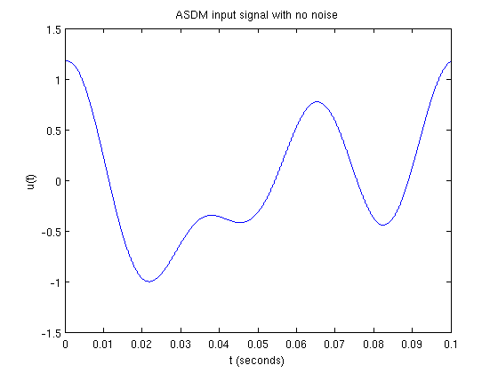
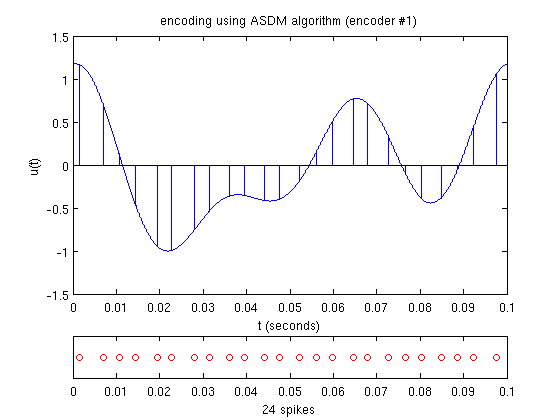
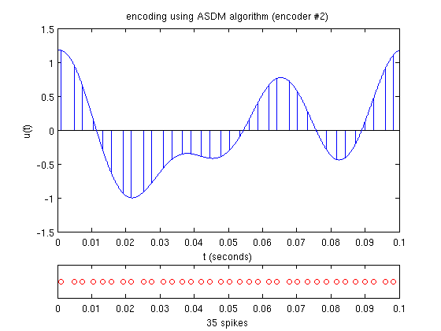
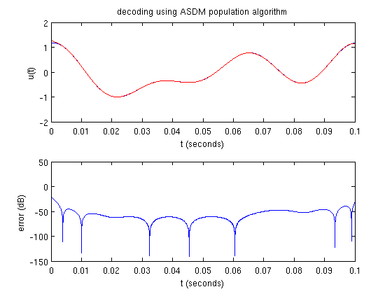
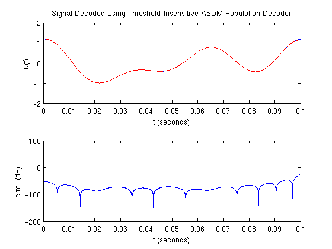

Time Encoding and Decoding with Multiple Asynchronous Sigma-Delta Modulators
This demo illustrates the time encoding and decoding of a bandlimited signal using multiple asynchronous sigma-delta modulators.
Contents
Generating a Test Signal
Generate a noiseless signal 0.1 s long sampled at 1 MHz containing 3 components no greater than 32 Hz:
dur = 0.1; % duration fs = 1e6; % sampling frequency dt = 1/fs; % sampling resolution f = 32; bw = 2*pi*f; % bandwidth (rad/s) t = [0:dt:dur]; % time support np = -inf; % noise level if np == -inf, fig_title = 'ASDM Input Signal with No Noise'; else fig_title = sprintf('ASDM Input Signal with %d dB of Noise',np); end rand('twister',0); randn('state',0); fprintf(1,'%s\n',fig_title); u = func_timer(@gen_test_signal,dur,dt,f,np); plot_signal(t,u,fig_title);
ASDM Input Signal with No Noise execution time = 0.169 s
Time Encoding
In this example, the input signal is encoded using two ASD modulators with different encoding parameters:
b1 = 3.5; % bias d1 = 0.7; % threshold k1 = 0.01; % scaling factor b2 = 3.6; % bias d2 = 0.5; % threshold k2 = 0.01; % scaling factor
Verify that recovery can take place with the given parameters:
if ~asdm_recoverable(u,bw,b1,d1,k1), return end if ~asdm_recoverable(u,bw,b2,d2,k2), return end
Encode the signal:
fig_title = 'Signal Encoded Using ASDM Encoder #1'; fprintf(1,'%s\n',fig_title); s1 = func_timer(@asdm_encode,u,dt,b1,d1,k1); figure plot_encoded(t,u,s1,fig_title);
Signal Encoded Using ASDM Encoder #1 execution time = 0.277 s
fig_title = 'Signal Encoded Using ASDM Encoder #2'; fprintf(1,'%s\n',fig_title); s2 = func_timer(@asdm_encode,u,dt,b2,d2,k2); figure plot_encoded(t,u,s2,fig_title);
Signal Encoded Using ASDM Encoder #2 execution time = 0.263 s
Time Decoding
Decode the encoded signal using several different algorithms:
fig_title = 'Signal Decoded Using ASDM Population Decoder'; fprintf(1,'%s\n',fig_title); u_rec = func_timer(@asdm_decode_pop,{s1,s2},dur,dt,bw, ... {b1,b2},{d1,d2},{k1,k2}); figure plot_compare(t,u,u_rec,fig_title);
Signal Decoded Using ASDM Population Decoder execution time = 0.403 s
fig_title = 'Signal Decoded Using Threshold-Insensitive ASDM Population Decoder'; fprintf(1,'%s\n',fig_title); u_rec = func_timer(@asdm_decode_pop_ins,{s1,s2},dur,dt,bw,{b1,b2}); figure plot_compare(t,u,u_rec,fig_title);
Signal Decoded Using Threshold-Insensitive ASDM Population Decoder execution time = 0.297 s
Author: Lev Givon
Copyright 2009-2011 Lev Givon